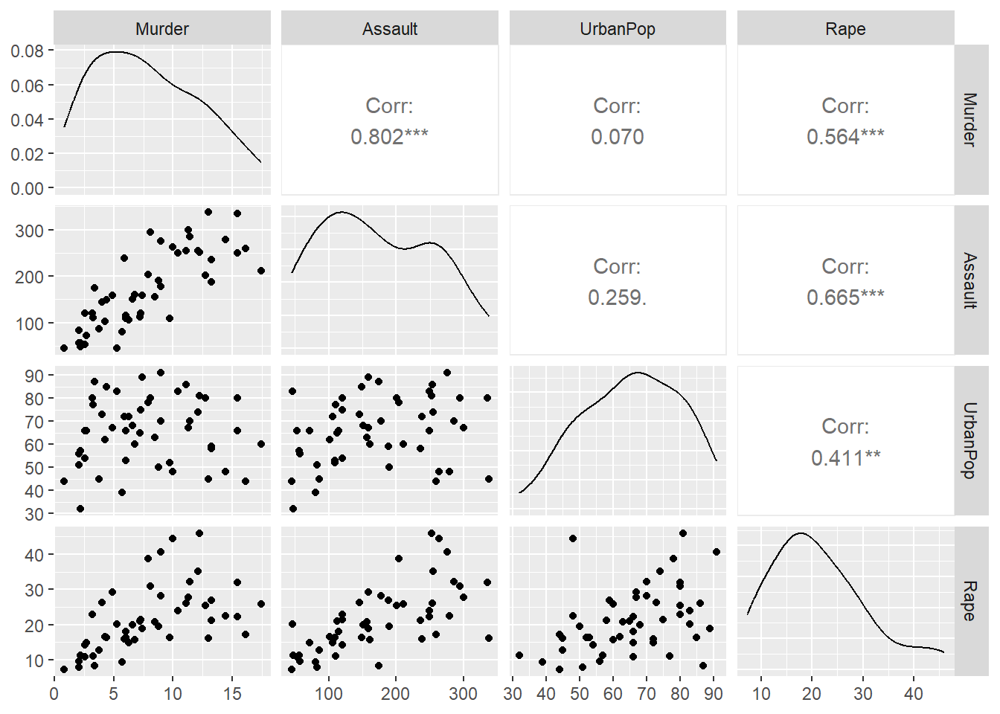

K-means clustering is a popular unsupervised machine learning algorithm designed for partitioning a dataset into distinct groups, or clusters, based on similarity patterns among data points. The algorithm iteratively assigns each data point to the cluster whose mean is closest, forming clusters with minimized intra-cluster distances. K-means requires a pre-specified number of clusters, denoted by ‘k.’ The process continues until convergence, where the assignment of data points and the cluster centroids stabilize. The algorithm is efficient and widely used for tasks such as customer segmentation, image compression, and pattern recognition. However, its performance can be sensitive to the initial placement of cluster centroids, and the choice of ‘k’ requires careful consideration. Despite its limitations, K-means clustering serves as a foundational technique in exploratory data analysis and unsupervised learning.
1. Data
For clustering using K-means, we use the freely available USArrests dataset. We aim to cluster the states of US based on the crimes from the USAressts data.
2. Identify and remove variables with high correlation
library(GGally)
Loading required package: ggplot2
Registered S3 method overwritten by 'GGally':
method from
+.gg ggplot2
ggpairs(data = USArrests,columns =c(1:4))

From the analysis, we see that there’s a high correlation between murder and assault. So, we have to remove either one of them. Here, we remove murder for the further clustering analysis.
K-means clustering with 4 clusters of sizes 8, 13, 13, 16
Cluster means:
Murder Assault UrbanPop Rape
1 1.4118898 0.8743346 -0.8145211 0.01927104
2 -0.9615407 -1.1066010 -0.9301069 -0.96676331
3 0.6950701 1.0394414 0.7226370 1.27693964
4 -0.4894375 -0.3826001 0.5758298 -0.26165379
Clustering vector:
Alabama Alaska Arizona Arkansas California
1 3 3 1 3
Colorado Connecticut Delaware Florida Georgia
3 4 4 3 1
Hawaii Idaho Illinois Indiana Iowa
4 2 3 4 2
Kansas Kentucky Louisiana Maine Maryland
4 2 1 2 3
Massachusetts Michigan Minnesota Mississippi Missouri
4 3 2 1 3
Montana Nebraska Nevada New Hampshire New Jersey
2 2 3 2 4
New Mexico New York North Carolina North Dakota Ohio
3 3 1 2 4
Oklahoma Oregon Pennsylvania Rhode Island South Carolina
4 4 4 4 1
South Dakota Tennessee Texas Utah Vermont
2 1 3 4 2
Virginia Washington West Virginia Wisconsin Wyoming
4 4 2 2 4
Within cluster sum of squares by cluster:
[1] 8.316061 11.952463 19.922437 16.212213
(between_SS / total_SS = 71.2 %)
Available components:
[1] "cluster" "centers" "totss" "withinss" "tot.withinss"
[6] "betweenss" "size" "iter" "ifault"
7. Visualizing clusters with 4 and 5 clusters
We use two different dataframes, data_selected and data_scaled for our clustering with 4 and 5 clusters. The variables without removing murder variable (data_scaled) for high correlation with assault variable has a better cluster visualization. In this case, using PCA would be really useful in creating new variable with less correlation without losing most information.